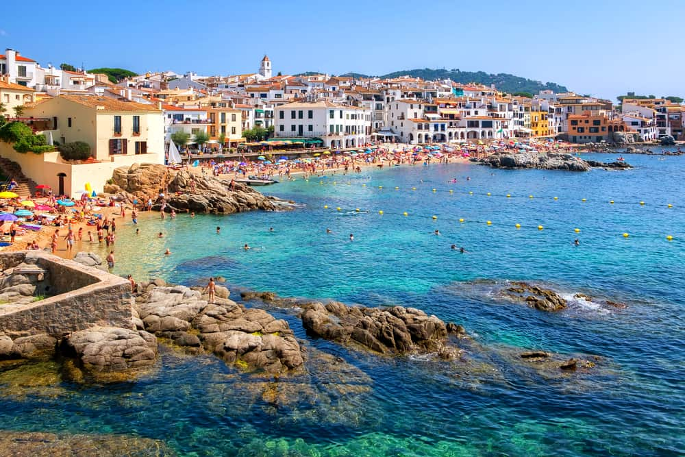

I have travelled to the north on numerous occasions, seeing sights such as the giants causeway.Belfast City is a great city with many attractions such as the Titanic Museum. Another place which i enjoyed visiting was the Ulster-American Folk park, due to my interest in History.
Countries I have been to
I travelled through wales when i was travelling to Manchester, I admired the beautiful scenery
We arrived in HolyHead and went paintballing

I have been to england 3 times. I have travelled to places such as Devon & Cornwall, St.Ive's, Manchester and London. When i was in First year me and my classmates travelled to Manchester to see Man United play against Q.P.R . It was a fantastic day made even better when United beat Q.P.R 3 - 1. I also travelled to London With my friends in October 2018. We saw landmarks such as Tower Bridge, The tower of London and Big Ben. We also went and saw the Los Angeles Chargers play the Tennessee Titans in Wembley Stadium, which was a fantastic experience.

I have been to France twice. My grand aunt owns a house in the south of France, in the town of Colliure. The scenery there is breathtaking, being below the pyrennes mountains and being situated on the coast, which hosts numerous beautiful beaches. We also visited the castle at Carcassone. It is a perfectly preserved medieval town in the south of France. We were lucky enough to witness a medieval jousting tournament. Inside the walls of the castle there is many medieval themed shops and restaurant's. You could also visit the perfectly preserved castle armoury and Throne room.
I have been to Spain on numerous occasions. My family and I usually travel up towards the north of Spain in the Catalan regions. There are many beautiful beaches located there with breathtaking scenery. It is located on the Costa brava (rocky coast) which gives rise to beautiful sea cliffs and rugged landscapes. I have also visited Barcelona and Madrid whilst in Spain. Madrid is the most memorable city i have ever visited. It is bursting with culture and has plenty to see and do such as the Santiago Bernabeau, Madrid Bullring, Toledo, The retiro park and the nighttime atmosphere in the place de sol.
I visited portugal once with my family. We stayed in the town of Villamoura. Portugal is a beautiful country which hosts beautiful weather and scenery. The Portugese also make beautiful food particulary the meat and steak dishes they prepare. There was a beach near us where we could participate in various water activities or relax if we felt like it.
Countries I would like to visit
I would love to visit the U.S.A in the next few years as it is a vast and beautiful country. I would first like to visit my relatives in Boston and then proceed to travel around the U.S and see as much as I can. I would love to see the major cities such as New York City, Chicago, Los Angeles and San Fransisco and of course, Las Vegas. I would also like to travel Route 66, which would give me a chance to take in the beautiful American countryside.
I have a great interest in visiting the nation of Japan. I am fascinated by The samurai and Japan's exciting history. The Samurai are unique and beautiful works of architecture which i would love to see. Many museums in Japan have a wide display of Samurai weapons and armour. Japan is also one of the most technologically developed countries in the world, which can be showcased by Japan's capital city, Tokyo. This is one of the most energetic and futuristic cities in the world.